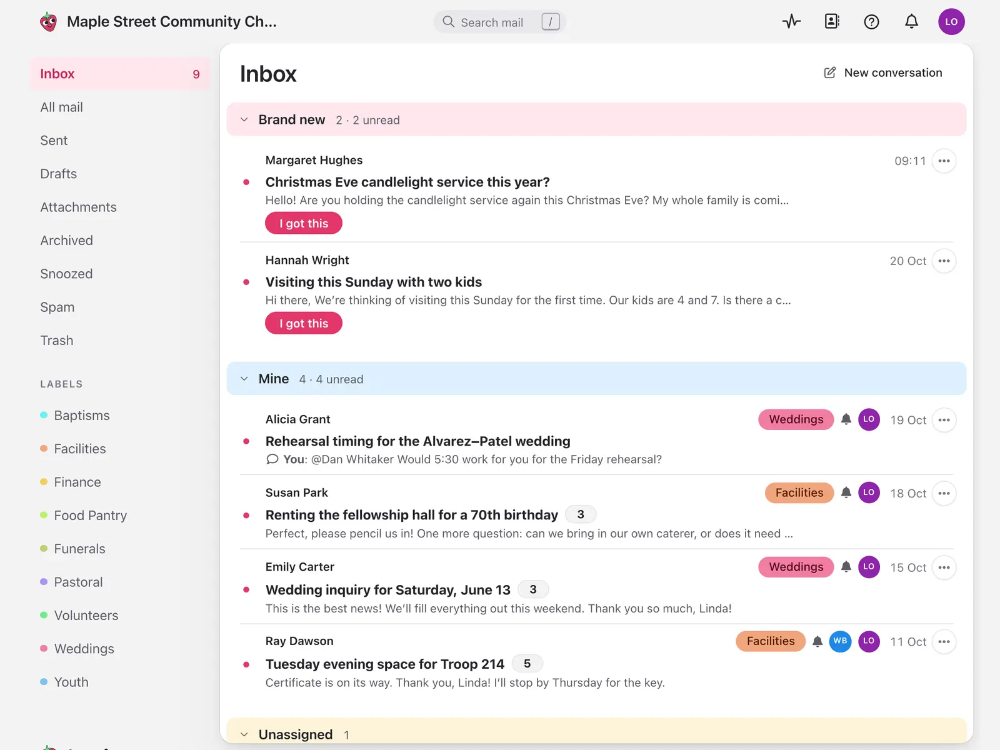
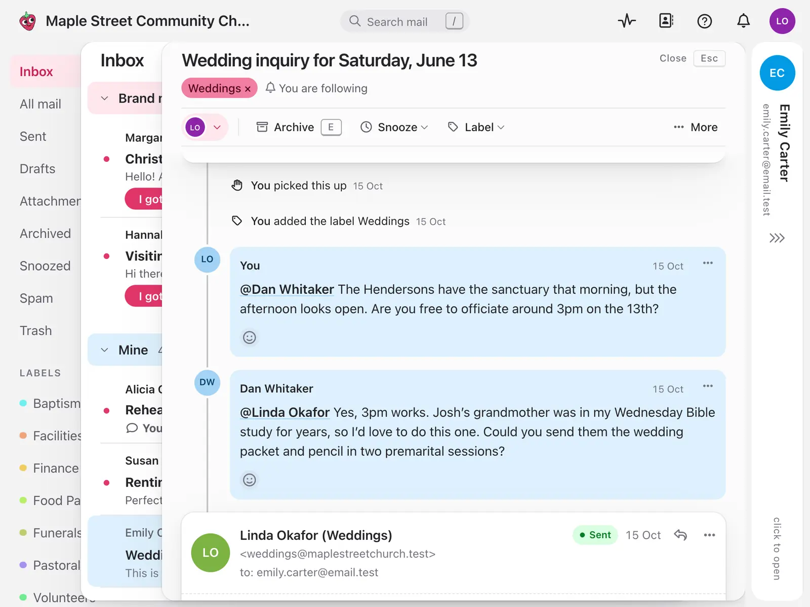

Improved reliability and new deployment opportunities
Jelly's ground-up rewrite using Rastrillo meant that it inherited performance budgets and clean separation of customer data, along with the ability to deploy on-prem, unlocking sales opportunities that were impossible before.
What Jelly is
Jelly is a shared email tool for small teams. The addresses a group answers from, like hello@, support@ or bookings@, get read and answered together. You can see who has picked up which conversation, leave notes for each other that the customer never sees, and stop asking "has anyone replied to this?"
It grew out of organising Ruby Manor, where a handful of volunteers sharing one inbox turned out to be messier than it had any right to be. Today the teams using it range from a neighbourhood user group to churches, clinics and small companies. Most of them are between three and fifteen people, and most of them do not want a helpdesk. They want email, but shared.
Keeping it affordable matters a lot to me. Jelly has a flat price, not a price per seat, because a team shouldn't have to decide which of its volunteers is worth paying for.

Where it started
The first version of Jelly is a Rails app, started in February 2024. It is a perfectly normal Rails app. It ran on Render as a web process and a background worker, with Postgres for the data, Redis alongside it, Postmark for sending mail and S3 for attachments.
Every team lived in the same Postgres database, told apart by a team_id column. That's how almost everyone builds this kind of software, and it's how I built it.
What wasn't working
Keeping one team's data away from another's was never really the problem. Rails and a bit of care handle that fine. The problems were stability and cost, and they turned out to be the same problem.
Everyone shared everyone else's bad day. All the incoming email for every team went through one queue. A flurry of activity, or one rogue email that tripped over a bug in the parser, and that queue could clog up, and suddenly nobody's mail was arriving. In the same way, one customer with a very large database running a particularly difficult search could tie up the database, and the timeouts would cascade out to teams who had done nothing at all except try to read their email.
The only fix on offer was a bigger bill. Render was already costing over $200 a month, and that runs around the clock whether anyone is reading mail or not. Every time things wobbled, the choice was the same: spend hundreds of dollars more on bigger servers, and get further locked into them, or spend the day fighting timeouts. For a product whose whole point is being affordable for small teams, neither of those was much of a choice. It had become a firefight.
There were smaller annoyances too.
Everyone moved together. One deploy meant every team got the change at the same moment. There was no easy way to give a new version to one friendly team first, and see how it went.
Self-hosting wasn't really possible. People asked to run Jelly themselves, which is very reasonable for an email tool. "Here's a Rails app, a Postgres, a Redis and a job worker, good luck" is not a very nice answer.
Getting started was a page of instructions. Homebrew, rbenv, Postgres, puma-dev, encryption keys fetched from a password manager. All of it ordinary, and all of it a reason a new person's first afternoon is spent not working on Jelly.
Starting again on CARLOS
At the end of August 2026 I started rebuilding Jelly as a Go app on rastrillo, deployed on CARLOS. The biggest change isn't the language. It's that every team gets its own instance of Jelly, with its own SQLite database.
That sounds like it should be a lot more work to run. On CARLOS it's less.
The app is a single static binary. I run carlos ship, and the platform takes care of putting it on instances, routing traffic to them, TLS certificates, configuration and secrets, and replicating each team's database somewhere safe. When somebody signs up, a small manager app asks CARLOS for a new instance, and a few moments later that team has a Jelly of their own.
A lot of the things the Rails app needed a separate service for are just part of the platform:
- Sending mail. CARLOS sends it, and keeps a record of what was delivered.
- Background work. There's no job worker and no Redis. The app declares a schedule, and for things that need to happen at a particular moment (a message sent later, a snooze running out) it asks the platform to wake it up then.
- Logs.
carlos logs, for one team, not a stream of everybody's.
Working on it day to day is pleasantly boring. bin/local up builds and runs Jelly and the manager on my laptop, with no CARLOS and nothing else to install beyond Go. Each test gets a fresh copy of a SQLite file instead of a shared database server. And because a whole team is just a file, I can copy one to see exactly what they're seeing when something looks wrong.

Moving teams across
Rebuilding something people already use only works if you can move them without them noticing. Each new Jelly instance can sync with the old Rails app, first silently in the background so I can check the data matches, and then for real when that team switches over. The first teams across were our own, then Jelly's own inbox, and then LRUG, the London Ruby User Group, as the first team from outside.
Because each team is its own instance, each one moves on its own day. If something goes wrong it goes wrong for one team, and the old app is still there to go back to.
What we're seeing
Quiet teams cost almost nothing. An instance that hasn't been used for fifteen minutes goes to sleep, and wakes again in well under half a second when an email arrives or someone opens it. Most small teams are quiet most of the time, so most of the time they aren't using anything at all. For the first time the hosting cost of a team looks like the size of the team.
One team's bad day stays theirs. Each team has its own database and does its own email processing, so there is no shared queue to clog and no shared database to tie up. If a strange email trips a bug, it trips it for one team, and I can fix it for them without anyone else noticing. A huge mailbox running a hard search slows down the people searching it, and nobody else. The firefighting has simply stopped.
Releases go out gradually. A new version can go to my own team first, then a few friendly ones, then everybody. Rolling back is one command.
Self-hosting is the same thing. The binary we run is the binary you'd run. Put it on your own CARLOS deployment, or just run the binary on any box you like. There isn't a second, lesser version for people who want to host it themselves.
It's quicker to build. With less infrastructure to think about, more of the time goes into Jelly itself. The new version has caught up with and passed the old one in a couple of months, with one person and a lot of tests.
Mostly, though, it feels like the architecture finally agrees with the product. Jelly is for small teams, and now each of them gets a small Jelly of their own.
Check it out at letsjelly.com
— James Adam, Jelly developer